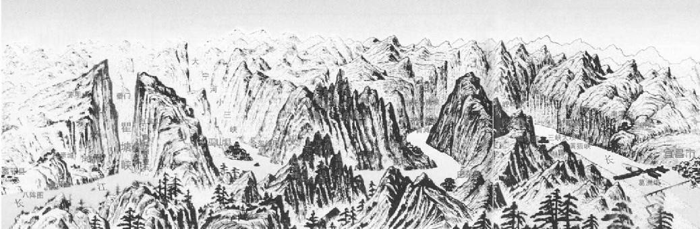

第五章 父与子
父子三人和两个儿媳妇现在已经准备妥当，即将进京。这次和前一次自然不同。三人已是文名大著，宦途成功几乎已确然无疑。这次举家东迁，要走水路出三峡，而不是由陆路经剑门穿秦岭。这次行程全长一千一百余里，大概是七百里水路，四百里旱路，要从十月启程，次年二月到达。用不着太急，因为有女人同行，他们尽可从容自在，在船上饮酒玩牌，玩赏沿途美景。两个妯娌从来没有离开过老家，心里知道这次是与进士丈夫同游，但可没料到她俩是在大宋朝三个散文名家的家庭里，而且其中一个还是诗词巨擘呢。一路上兄弟二人时常吟诗。那时所有读书人都会作诗，借以写景抒情，就如同今天我们写信一样。子由的妻子姓史，出自四川旧家。东坡妻子的地位、年龄较高，她属于实际聪明能干一型，所以子由的妻子与她相处，极为容易。并且，老父这一家之长也和他们在一起，做晚辈的完全是服从柔顺，大家和睦相处。在这位大嫂眼里，三个男人之中，她丈夫显然是易于激动，不轻易向别人低头，而说话说得滔滔不绝。子由身材较高而瘦削，不像哥哥那么魁伟，东坡生而颧骨高，下巴颏儿和脸大小极为相配，不但英俊挺拔，而且结实健壮。和他们在一起的，还有东坡的小儿子，是苏家的长孙，就是那一年生的。有这么一个孩子，这家真是太理想、太美满了。倘若这个孩子早生一年，多少有点儿让人不好意思，因为觉得这位年轻才子苏东坡在母丧的第一年里就和妻子太任性，太失于检点。宋朝的道学先生就会说他有亏孝道，要对他侧目而视了。
苏家是在以大石佛出名的嘉州上船，对两对小夫妇而言，这是一次富有希望的水路旅行，有兴致，有热情，有前途，有信心。真是“故乡飘已远，往意浩无边”。四川为中国最大之省份，其大与德国相似，也是和三国的历史密切相关的。走了一个月才到东边的省界，这时三峡之胜才开始，山顶上的城镇庙宇，会令他们想起古代的战将、过去的隐人道士。兄弟二人上岸，游历仙都，据说当年有一个修行的道士，在白昼飞升之前就住在那个地方。东坡这个少年诗人早期写的诗，其中有一首是关于传说中的一头白鹿，也就是那个道士身边相伴的那头鹿，这首诗足以证明东坡精神的超逸高士。那首诗是：
日月何促促，尘世苦局束。 仙子去无踪，故山遗白鹿。 仙人已去鹿无家，孤栖怅望层城霞。 至今闻有游洞客，夜来江市叫平沙。 长松千树风萧瑟，仙宫去人无咫尺。 夜鸣白鹿安在哉，满山秋草无行迹。
长江三峡，无人不知其风光壮丽，但对旅客而言，则是险象环生。此段江流全长二百二十余里，急流旋涡在悬崖峭壁之间滚转出入，水下暗石隐伏，无由得见，船夫要极其敏捷熟练，才可通行。三峡之中，每年都有行船沉没、旅客丧生之事，在如此大而深的江流之中，一旦沉下，绝无生望。然而三峡确是富有雄壮惊人之美，在中国境内无一处可与之比拟，在世界之上，也属罕见。四川何以向来能独自成一国家，原因就在自然地理方面，省东界有高山耸立，水路则有三峡之险，敌人无从侵入。
长江三峡风光示意图 地图 2000年
长江上游的瞿塘峡、巫峡和西陵峡合称三峡，西起重庆市奉节县白帝城，东至湖北省宜昌市南津关。自白帝城至黛溪称瞿塘峡，巫山至巴东县官渡口称巫峡，秭归的香溪至南津关称西陵峡。两岸峭崖壁立，水道曲折多险滩，是长江上最为奇秀壮丽的山水画廊。
经三峡时如若逆流而上，船夫的操作真是艰苦万分。那时，一只小平底木船要由六十至七十个纤夫，用长绳子一头拴在船上，一头套在肩上，在势如奔马的狂波中逆流而上，在沿江的岸边一步步俯首躬身向上跋涉而行。顺流而下时，则危险更大。在水潮奔涌而下之时，全船的安全全操在一个舵夫之手，他必须有极高的技巧、极丰富的经验，才能使船庶乎有惊而无险。三峡也者，即为四川境内的瞿塘峡、巫峡和湖北省宜昌以上的西陵峡。每一个峡都是一连串危险万分的洪流激湍，其中旋涡急流交互出现，悬崖峭壁陡立水中，达数百尺之高。
惊险之处自瞿塘峡开始，因为水中有若干巨大的岩石，因季节之不同、水面之高低而异，岩石有时立出水面高达三十尺，有时又部分隐没于水中。当时正是冬季，正是江面航行困难之时。因为水面变窄，夏季洪水泛滥时与冬季水干时，江面水平高低之差竟达一百尺之多。船夫总是不断注视江心岩石边水的高度。这些岩石叫“滟滪堆”，是因为惊涛骇浪向巨大岩石上冲击，水花飞散起来，犹如美女头上的云鬟雾鬓。滟滪堆的巨石在完全淹没之时，则形成一片广阔的旋涡，熟练的船夫亦视之为畏途。当地有个谚语说：“滟滪大如马，瞿塘不可下；滟滪大如象，瞿塘不可上。”这两句俗语也不见得有多大用处，只因为河床的变化太大，有的地方水位低时宜于行船，有的地方水位高时便于行船，主要以隐藏于水下的岩石之高低为准。有的地方偶然降有大雨，船夫就要等候数天，直到水位恢复到安全的高度再开船。纵然如此危险，人还是照旧走三峡，或为名，或为利，而不惜冒生命之险，就像现在苏家一样。出外旅行的人尽其所能，也只有把自己的安危委诸天命，因为除此之外，别无办法。行经三峡的人往往在进入三峡之前焚香祷告，出了三峡再焚香谢神。不管他们上行下行，在三峡危险的地方，神祇担保有美酒牛肉大快朵颐的。自然界有不少奇妙之事，在这里，三峡正好是奇谈异闻滋生之处，这里流传着山顶上神仙出没的故事。在进入瞿塘峡处，有“圣母泉”，是在岸上岩石间有缝隙，能回答人声。每逢有旅客上去向缝隙大呼“我渴了！”泉即出水，正好一杯之量而止。要再喝第二杯还需喊叫。
苏家向神祈求赐福之后，开船下驶。因为船只行驶时相距太近会发生危险，通常都是在一条船往下走了至少半里之后，另一条船才开出。若逢官家有船通过时，有兵丁手持红旗，按距离分立江边，前面的船已然平安渡过险地之后，便挥旗发出平安信号。苏东坡就曾作诗描写道：
入峡初无路，连山忽似龛。 萦纡收浩渺，蹙缩作渊潭。 风过如呼吸，云生似吐含。 坠崖鸣窣窣，垂蔓绿毵毵。 冷翠多崖竹，孤生有石楠。 飞泉飘乱雪，怪石走惊骖。
偶尔他们的船驶过一个孤立的茅屋，只见那茅屋高高在上侧身而立，背负青天，有时看见樵夫砍柴。看那茅屋孤零零立在那里，足可证明居住的人必然是赤贫无疑，小屋顶仅仅盖着木板，并无瓦片覆盖。苏东坡正在思索人生的劳苦，忽然瞥见一只苍鹰在天空盘旋得那么悠然自在，似乎丝毫不为明天费一些心思，于是自己盘算，为了功名利禄而使文明的生活受到桎梏镣铐的枷锁，是否值得？在高空飘逸飞翔的苍鹰正好是人类精神解脱后的象征。
现在他们的船进入巫峡了，巫峡全长五十里。高山耸立，悬崖迫人，江面渐窄，光线渐暗，呈现出黎明时的昏黄颜色，仿佛一片苍茫，万古如斯。自船面仰望，只见一条细蓝，望之如带，那正是天空。只有正值中午，才能看见太阳，但亦转瞬即逝；在夜间，也只有月在中天之际才能看见一线月光。岸上巨石耸立，巨石顶端则时常隐没于云雾中。因为风高力强，云彩亦时时改变形状，山峰奇高可畏，亦因云影聚散而形状变动不居，虽绘画名家，亦无法捉摸把握。巫山十二峰中，神女峰状如裸女，自从宋玉作《神女赋》以来，独得盛名。此处，高在山巅，天与地互相接触，风与云交互鼓荡，阴阳雌雄之气，获得会合凝聚，是以“巫山云雨”一词，至今还留为男女交欢之称。峡内空气之中，似乎有神仙充盈，而云雾之内亦有精灵飞舞。苏东坡青年的理性忽然清醒。他觉得此等神话悖乎伦理。他说：“成年之人也仍不失其童稚之心，喜爱说神道鬼。楚辞中的故事神话全是无稽之谈。为神仙而耽溺于男女之欲者，未之有也。（世人喜神怪，论说惊幼稚。楚赋亦虚传，神仙安有是。）”
这时有一个年老的船夫开始给他们说故事。他自称年轻时，常攀登那些最高的山峰，在山顶池塘中洗浴，衣裳挂在树枝上晾干。山中有猿猴，但是他爬到那样高处，鸟鸣猿啼之声已杳不可闻，只有一片沉寂与山风之声而已。虎狼也不到那样高处，所以只有他一人，但他并不害怕。神女庙附近有一种特别的竹子，竹枝柔软低垂，竟直触地面，仿佛向神俯首膜拜一样。有风吹拂，竹枝摆动，使神坛随时保持清洁，犹如神女的仆人一般。苏东坡听了，颇为所动，心想：“人也许可以成仙，困难就在于难忘人欲耳。（神仙固有之，难在忘势利。）”东坡在一生之中，也和同时代其他人一样，很相信会遇到神仙，相信自己也许会成仙。
他们的船进巫峡之时，“神鸟”开始随船而飞。其实这种乌鸦也和其他聪明的鸟一样，因为在神女庙上下数里之内，这些乌鸦发现有船来，就一路追随，从船上乘客那儿啄取食物。乘客往往与乌鸦为戏。他们把饼饵扔到半空中，兴高采烈地看着神鸦自天空俯冲下来，将食物由空中衔起，百无一失。
这一带地方，自然无人居住，也不适于人居住。三苏行经东濡滩时，波涛汹涌，船身被打击抛掷，就像一片枯干的树叶在旋涡之中一般。在他们以为已经过了最危险的地方时，谁知又来到怒吼滩，这里更为惊险。怪石如妖魔，沿岸罗列，有的直入江心。然后又来到一个地方，叫作“人鲊瓮”，意思是好多旅客在此丧命，就如同一罐子死鱼。这里是一块儿特别巨大的圆石头，伸入江中，占了水道的五分之四宽度，水道因之变窄，逼得船只经过此处时，必须急转直下。凡是旅客过了人鲊瓮，都觉得那个老船夫，真不啻是自己“生身的父母，再造的爹娘”一样。
出了巫峡，他们不久就到了秭归，开始看见沿岸高高低低散布着些茅屋陋舍。此处是一极小的乡镇，居民不过三四百家，坐落在陡峭的山坡上，居民极为贫苦。可是想到这一带令人心神振奋的风光之美，觉得在这个半文明的穷乡僻壤，居然出了两个大诗人、一个著名的皇后，还有另一个历史上著名的女人，也并非无故了。这大概就是奇山异水钟灵毓秀的缘故吧。一般居住山地的人，在风俗上总是把东西装在桶里或筐子里，背在背上，而且大部分是由妇女背着，这很容易使人肌肉疲劳，但是却永远对她们的身段有益。处在这里，未嫁的姑娘总是把头发分开，高高梳成两个扁圆的髻儿，以别于已婚的妇人。髻儿上插着六根银簪子，横露在两侧，另外还拢上一个大象牙梳子，有手掌那么大小，在头的后面。
苏家现在才过了瞿塘峡和巫峡，最要命的一个还在后面呢。大约三十年之前，有一次山崩，把尖锐的岩石滚落在江心，使船只无法通过。江面的交通在这带断绝了大约二十年，后来才勉强开了一条狭窄的通道。这个地方因之叫作“新滩”。因为风雪甚大，苏家在此停留了三天。苏东坡曾有诗记此事：
缩颈夜眠如冻龟，雪来唯有客先知。 江边晓起浩无际，树杪风多寒更吹。 青山有似少年子，一夕变尽沧浪髭。 方知阳气在流水，沙上盈尺江无澌。 随风颠倒纷不择，下满坑谷高陵危。 江空野阔落不见，入户但觉轻丝丝。 沾裳细看若刻镂，岂有一一天工为。 霍然一挥遍九野，吁此权柄谁执持？ ………… 山夫只见压樵担，岂知带酒飘歌儿。 ………… 冻吟书生笔欲折，夜织贫女寒无帏。 高人著屐踏冷冽，飘拂巾帽真仙姿。 野僧斫路出门去，寒液满鼻清淋漓。 ………… 舟中行客何所爱，愿得猎骑当风披。 草中咻咻有寒兔，孤隼下击千夫驰。 敲冰煮鹿最可乐，我虽不饮强倒卮。 楚人自古好弋猎，谁能往者我欲随。 纷纭旋转从满面，马上操笔为赋之。
西陵峡 摄影 现代
西陵峡号称“据三峡之门户，扼川鄂之咽喉”，西起香溪口，东至南津关，为三峡最险处，历史上以其航道曲折、怪石林立、滩多水急、行舟惊险而闻名。不过中华人民共和国成立后，经过对航道的多年治理和葛洲坝、三峡大坝等水利工程的建成，水势已趋于平缓，只是绮丽景观如旧。
长江在此处有如此的自然危险，本地人却因此落个有利可图。他们打捞沉船，转卖木板用以修理别的船，并以此为业。他们也像一般名胜古迹城镇的居民一样，观光客往往因故不得不在本地停留数日，他们就可以和观光客交易而有生意做。此地江流湍急，船上的货物往往需要卸下，而乘客也宁愿在岸上走走，使身体舒服一下。
从秭归再往下走，已然可以在遥远的地平线上望见大牛的背部耸立在较近的山岭顶端。他们现在正在进入的地区，是以庞大的黄牛山为主要景物的。这里的岩石甚为奇怪，当山岭的侧影蚀刻在遥远的天空中时，黄牛山这头巨牛似乎是由一个穿蓝衣、戴斗笠的牧童牵着。本地有个俗语描写这头黄牛蛮横的面貌说：“朝发黄牛，暮宿黄牛，三朝三暮，黄牛如故。”本地的女人脸皮细嫩白净，头上包着小黑圆点的头巾。风光之美可与巫峡抗衡，在有些乘客看来，甚至会超巫峡之上。那种风景正是在中国山水画上常可见到的。形状令人难以置信的巨石矗立天际，望之如上帝设计的巨型屏风；又有如成群的石头巨人，或俯首而立，或跪拜于地面向上苍祷告。河边上的岩石，层层排列成阵，似乎是设计出来，欲以大自然之壮丽故意向人炫示。此处有一巨大之断崖，表面平坦，竖立如同巨剑，尖端正刺入江岸。再沿江下行不远，危险的航程即将毕事之前，来到了虾蟆培。虾蟆培是一块儿巨大的扁圆石头，酷似一个青蛙头，口中有水流入河中，形状极似水晶屏风。此一巨大的扁圆石头呈苔绿色，背上满是晶莹的小水珠。青蛙尾尽处为一石洞，其中发出清脆的潺湲之声。有些赴京赶考的举子往往在青蛙嘴边接水，带到京中研墨，供做文章之用。过了虾蟆培不远，大自然一阵子的天威怒气算是消散尽了，岩石江水的洋洋大观也收场了，从宜昌以下，风光一变而为平静安详。夕阳照着一带低平的稻田与炊烟处处的茅舍，提醒旅客们已再度回到人类可以安居的世界。一般习俗是，旅客到此，因为逃过灾难，转危为安，都相向庆祝。旅客以美酒猪肉犒劳船夫，人人快乐，人人感恩。回顾过去，都以为刚刚做了一个荒唐梦。
到了江陵，苏家弃船登陆，乘车起旱，奔向京都。江上航行完毕之日，兄弟二人已然作了诗歌百首。这些首诗另集印行，名为《南行集》。但是，苏东坡最好的几首诗是在陆地上行程中写的。那几首诗特别注重音韵、情调、气氛之美，节奏极好，形式多变化。在襄阳他写了几首乐府诗，《野鹰来》系为追忆刘表而作，《上堵吟》则为追忆孟达因手下二将不才而失去沃土的经过。其诗为：
台上有客吟秋风，悲声萧散飘入空。 台边游女来窃听，欲学声同意不同。 君悲竟何事？千里金城两稚子。 白马为塞凤为关，山川无人空自闲。 我悲亦何苦？江水冬更深，鳊鱼冷难捕。 悠悠江上听歌人，不知我意徒悲辛。
苏家在二月安抵京城。他们买了一栋房子，附有花园，约有半亩大，靠近宜秋门，远离繁乱的街道。绕房有高大的老槐树和柳树，朴质无华的气氛颇适于诗人雅士居住。一切安顿之后，父子三人便恭候朝廷任命了，当然那一向是需时甚久的。兄弟二人又经过了两次考试，一是考京都部务，另一种更为重要，名为“制策”，要坦白批评朝政。仁宗求才若渴，敕令举行此种考试，以激励公众舆论的风气。所有读书人经大臣推荐，并凭呈送的专门著述之所长，都可以申请参加。苏氏兄弟经大臣欧阳修的推荐，都申请而蒙通过。苏东坡蒙朝廷赐予的等级，在宋朝只有另一人获得。他又呈上二十五篇策论文章，其中有些篇已经成为后世学校中必读的散文。后来，皇后告诉人，仁宗曾经说：“今天我已经给我的后代选了两个宰相。”
万幸的是，父亲被任命为校书郎，并未经考试，正合他的本意，后来又授以新职，为本朝皇帝写传记。这本来就是作家的事，他自然乐于接受。但是后来出现了问题，就是那些皇帝都是当今天子的先人，他们的传记须忠实到什么程度呢？苏洵决定采取史家的严格写法，史家不应当文过饰非，即使为自己的先人立传，亦当如此。于是有了争论，在今日苏洵的文集里尚保有下列的文句：
洵……闻臣竂上言，以为祖宗所行不能无过差。不经之事，欲尽芟去，无使存录。……纂集故事……非曰制为典礼而使后世遵而行之也。然则洵等所编者，是史书之类也。遇事而记之，不择善恶，详其曲折，而使后世得知而善恶自著者，是史之体也。若夫存其善者，而去其不善，则是制作之事，而非职之所及也。……班固作汉志，凡汉之事悉载而无所择。今欲如之，则先世之小有过差者，不足以害其大明，而可以使后世无疑之之意。
苏氏父子的文名日盛。他们与当代名家相交往，诗文为人所爱慕，一家皆以文坛奇才而知名于时。兄弟刚二十有余，年少有时也会成为天才的障碍。苏东坡这时轻松愉快，壮志凌云，才气纵横而不可抑制，一时骅骝长嘶，奋蹄蹴地，有随风飞驰，征服四野八荒之势。但是弟弟则沉默寡言，父亲则深沉莫测，对事对人，一概不通融假借，因此处世则落落寡和，将身旁这两匹千里之驹，随时勒抑，不得奋鬣奔驰。